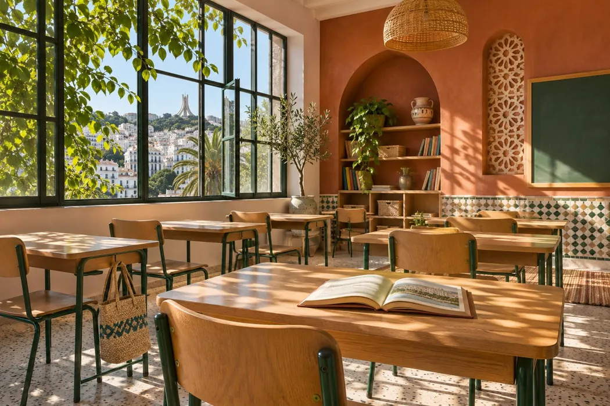

Le parcours scolaire
Explorez les quatre cycles et les priorités pédagogiques de chaque âge.
DécouvrirÉcole privée · Alger
De la maternelle au lycée, découvrez un parcours qui donne aux élèves le temps d’apprendre, de pratiquer et de gagner en autonomie.
Préparer une visite
Explorez les quatre cycles et les priorités pédagogiques de chaque âge.
DécouvrirBibliothèque, ateliers et cour-jardin donnent à chaque journée plusieurs façons d’apprendre.
DécouvrirConsultez les étapes pour rencontrer l’équipe, visiter les espaces et préparer vos questions.
Découvrir